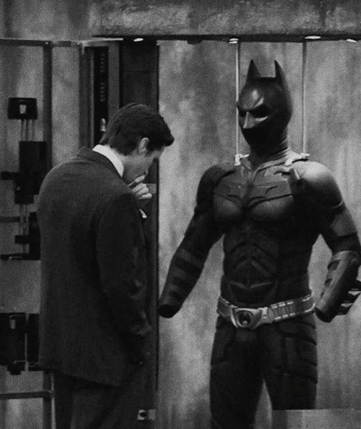

Batman Biography

Bruce Wayne was born into a position of significant privilege, inheriting the substantial wealth of the Wayne estate. His early life was characterized by luxury and stability until a tragedy in Gotham City changed his life forever. This event served as the start for a radical shift in his personal identity.
In response to this trauma, Wayne rejected a life of leisure in favor of rigorous self-discipline. He engaged in extensive physical and mental conditioning, mastering various forms of martial arts and cognitive strategies. This period of preparation was defined by a commitment to personal excellence.
Ultimately, Wayne adopted the persona of the Batman, utilizing the intrinsic human fear of the unknown as a tool. By transitioning from a private citizen to a vigilante, he established a new way to protect the city.